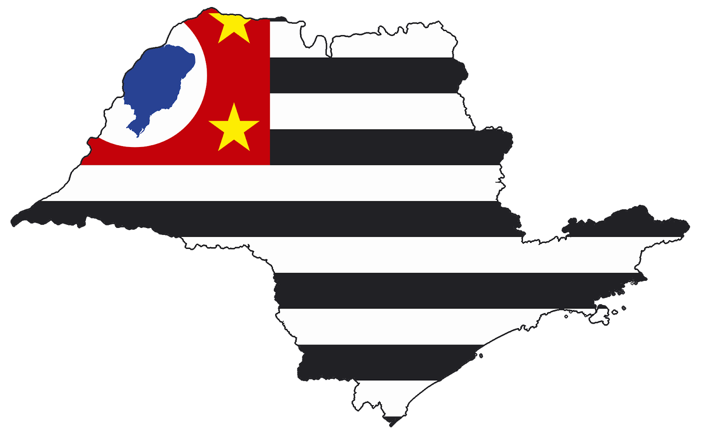

A fundação de São Paulo insere-se no processo de ocupação e exploração das terras americanas pelos portugueses, a partir do século XVI. Inicialmente, os colonizadores fundaram a Vila de Santo André da Borda do Campo (1553), constantemente ameaçada pelos povos indígenas da região.
Nessa época, um grupo de padres da Companhia de Jesus, da qual faziam parte José de Anchieta e Manoel da Nóbrega, escalaram a serra do mar chegando ao planalto de Piratininga onde encontraram "ares frios e temperados como os de Espanha" e "uma terra mui sadia, fresca e de boas águas". Do ponto de vista da segurança, a localização topográfica de São Paulo era perfeita: situava-se numa colina alta e plana, cercada por dois rios, o Tamanduateí e o Anhangabaú.
Hino da cidade de São Paulo
Osasco é um município brasileiro localizado na Região Metropolitana de São Paulo, no estado de São Paulo, no Brasil. Nascido como um bairro da capital paulista no final do século XIX, tornou-se município emancipado após um plebiscito em 1962.Osasco é um município brasileiro localizado na Região Metropolitana de São Paulo, no estado de São Paulo, no Brasil. Nascido como um bairro da capital paulista no final do século XIX, tornou-se município emancipado após um plebiscito em 1962.
Possui importante atividade econômica nos setores industrial, comercial e de serviços. Conforme o censo do IBGE, com dados de 2017, Osasco possui o 6º maior Produto Interno Bruto do Brasil e o 2º maior do Estado de São Paulo, ficando à frente de muitas capitais estaduais brasileiras, como Salvador, Fortaleza e Recife, sendo a cidade não capital com o mais alto PIB da nação naquele ano.
Durante a época do Império, na região onde hoje se situa o Centro e em seus arredores, existiam vários sítios e chácaras. Próximo às margens do Rio Tietê, no século XIX, havia uma aldeia de pescadores e também grandes fazendas. Já no final do Império, uma delas foi vendida ao italiano Antonio Agù e outra ao português Manuel Rodrigues
Foi a fantástica perseguição ao ouro que levou o sertanista Gaspar Vaz da Cunha, o Oyaguara, a romper as matas virgens da Mantiqueira, vindo do Vale do Paraiba, através de picadas coleantes e escarpadas, em direção às minas auríferas de Itajiba (atual cidade itajubá).
Ficou encantado com a exótica e exuberante paisagem da região do Sapucaí e não sabia que estava desbravando os caminhos que, mais tarde, levariam ao paraíso na terra, ornado de opulenta vegetação, solo fértil, clima excepcional e água salubérrima. Por volta de 1771, a coragem épica de Inácio Caetano Vieira de Carvalho, seguindo as pegadas do Oyaguara, subiu os degraus da Serra Preta, na Mantiqueira, em direção ao Pico do Itapeva, vindo de Taubaté, fixando-se com sua família durante 18 anos nos Campos da Mantiqueira. Fundou a Fazenda Bom Sucesso, requereu e obteve carta de sesmaria do Governador da Capitania de São Paulo e lutou bravamente para defender as divisas de São Paulo contra seu vizinho sesmeiro, João da Costa Manso, da Fazenda São Pedro, das bandas de Minas Gerais. Graças à sua luta, Campos do Jordão permaneceu paulista e Inácio Caetano Vieira de Carvalho levou para o túmulo a glória de ter sido o pioneiro desta, hoje, maravilhosa Estância.
Narra a lenda que Inácio Caetano era muito sovina e que, por isso, enterrara barricas de ouro em uma lomba larga entre três pinheiros, despertando a cobiça de muitos ao longo de gerações que, até hoje, sulcam a terra em busca do lendário tesouro do desbravador. Com a sua morte em 1823, seus herdeiros hipotecaram a sesmaria ao Brigadeiro Manoel Rodrigues Jordão, que, mais tarde, adquiriu-a nas imediações do dia de Natal, pelo que o povo passou a chamar as terras de Fazenda Natal e, logo em seguida, de Campos do Jordão. Aí a origem do nome.

A fundação de Barueri remonta à época das missões jesuíticas, em meados do século XVI.
Segundo os historiadores a origem da cidade foi o aldeamento de Barueri, fundado em 11 de novembro de 1560 pelo padre José de Anchieta, que ergueu na margem direita do rio Tietê, pouco acima da confluência com o Rio Barueri Mirim, a Capela de Nossa Senhora da Escada, hoje padroeira do município.
O nome Barueri deriva da mistura da palavra francesa barriére (barreira, queda, obstáculo) com o vocábulo indígena mbaruery (rio encachoeirado), significando, portanto, barreira que encachoeira o rio, visto que a área ficava na bifurcação do Anhembi, como era chamado o Tietê
A área em que hoje se acha instalada a cidade de Campinas, conta com pouco mais de 260 anos de história colonial/imperial/republicana e com milhares de anos de história indígena.
Nos marcos de sua formação colonial, a cidade de Campinas surgiu na primeira metade do século XVIII como um bairro rural da Vila de Jundiaí. Localizado nas margens de uma trilha aberta por paulistas do Planalto de Piratininga entre 1721 e 1730 (trilha que seguia em direção às recém descobertas minas dos Goiases), o povoamento do "Bairro Rural do Mato Grosso" teve início com a instalação de um pouso de tropeiros nas proximidades da "Estrada dos Goiases". O pouso das "Campinas do Mato Grosso" (erguido em meio a pequenos descampados ou "campinhos", em uma região de mata fechada) impulsionou o desenvolvimento de várias atividades de abastecimento e promoveu uma maior concentração populacional, reunindo-se neste bairro rural em 1767, 185 pessoas.
No mesmo período (segunda metade do século XVIII), ganhava forma também uma outra dinâmica econômica, política e social na região, associada à chegada de fazendeiros procedentes de Itú, Porto Feliz, Taubaté, entre outras. Estes fazendeiros buscavam terras para instalar lavouras de cana e engenhos de açúcar, utilizando-se para tanto de mão de obra escrava. De fato, foi por força e interesse destes fazendeiros, ou ainda, por interesse do Governo da Capitania de São Paulo, que o bairro rural do Mato Grosso se fez transformado em Freguesia de Nossa Senhora da Conceição das Campinas do Mato Grosso (1774); depois, em Vila de São Carlos (1797), e em Cidade de Campinas (1842); período no qual as plantações de café já suplantavam as lavouras de cana e dominavam a paisagem da região.

A lenda do Eldorado, que se fundava na crença de uma cidade repleta de ouro, cujo príncipe tinha também o corpo dourado, foi ouvida pelos primeiros conquistadores espanhóis que se fixaram, no século XV e XVI, nas costas da atual Colômbia e Venezuela, então chamada Terra Firme ou Terra Santa. A busca do Eldorado, que levou os europeus até ao Brasil, persistiu até meados do século XVIII.
Em 1535, o general Sebastián de Belalcazar, após ter destruído a última resistência dos Incas, no Norte de Lima (na direção de Quito), ouviu de um indígena, seu prisioneiro, a história do Eldorado, uma lenda das tribos ribeirinhas do Orinoco. Reza a lenda que havia uma tribo muito rica, localizada perto da atual Santa Fé de Bogotá (capital da Colômbia), onde viviam os índios Chibcha ou Muisa.
Este povo tinha como costume religioso o de untar o corpo do rei, provavelmente quando subia ao trono ou antes de ações guerreiras, com uma substância aderente, talvez resina, sobre a qual era soprado finíssimo pó de ouro. Completamente dourado, o rei dirigia-se para o meio da lagoa Guatavita, numa embarcação, e banhava-se nas águas, depois de ter lançado, para o fundo, joias, vários objetos de ouro e pedras preciosas, como oferendas ao seu deus. Segundo os registos de Oviedo de 1543, os Espanhóis tinham ouvido dos Índios que, todas as noites, o rei dourado se lavava, retirando o ouro do corpo, mas, no dia seguinte, voltava a ser coberto por esse metal precioso.